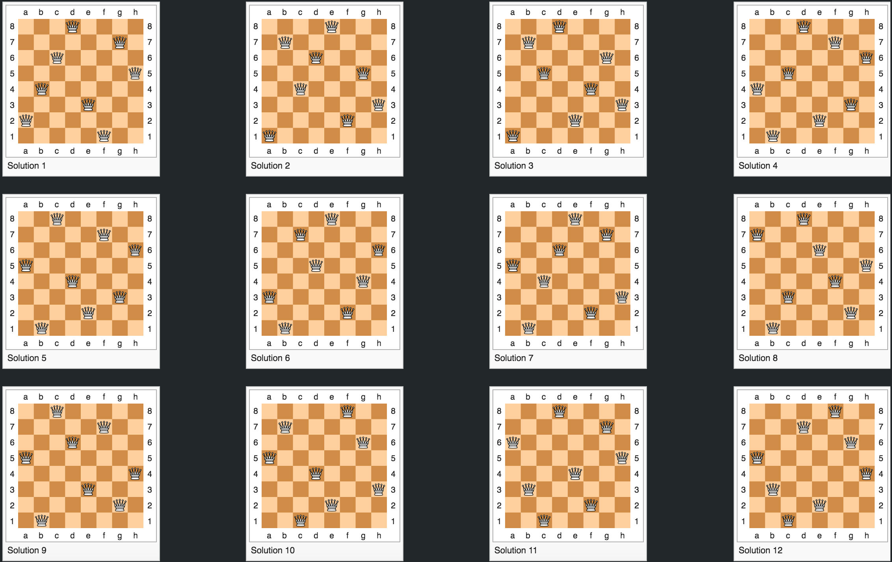

How can N pieces be placed on an NxN chessboard with no conflicts?
Explanation
(courtesy of wikipedia)
Chess composer Max Bezzel published the eight queens puzzle in 1848.
The problem can be quite computationally expensive, as there are 4,426,165,368 (i.e., 64C8) possible arrangements of eight queens on an 8×8 board, but only 92 solutions. It is possible to use shortcuts that reduce computational requirements or rules of thumb that avoids brute-force computational techniques. For example, just by applying a simple rule that constrains each queen to a single column (or row), though still considered brute force, it is possible to reduce the number of possibilities to just 16,777,216 (that is, 88) possible combinations. Generating permutations further reduces the possibilities to just 40,320 (that is, 8!), which are then checked for diagonal attacks.
The eight queens puzzle has 92 distinct solutions. If solutions that differ only by symmetry operations (rotations and reflections) of the board are counted as one, the puzzle has 12 fundamental solutions. A fundamental solution usually has eight variants (including its original form) obtained by rotating 90, 180, or 270° and then reflecting each of the four rotational variants in a mirror in a fixed position. However, should a solution be equivalent to its own 90° rotation (as happens to one solution with five queens on a 5x5 board), that fundamental solution will have only two variants (itself and its reflection). Should a solution be equivalent to its own 180° rotation (but not to its 90° rotation), it will have four variants (itself and its reflection, its 90° rotation and the reflection of that). It is not possible for a solution to be equivalent to its own reflection (except at n=1) because that would require two queens to be facing each other. (For n-queen problem's solution to be equivalent to its own mirror-image solution, the solution needs to be symmetrical by the center of the board either horizontally or vertically. Then, two queens would be facing each other, making it not a solution. ) Of the 12 fundamental solutions to the problem with eight queens on an 8x8 board, exactly one is equal to its own 180° rotation, and none is equal to its 90° rotation; thus, the number of distinct solutions is 11*8 + 1*4 = 92 (where the 8 is derived from four 90° rotational positions and their reflections, and the 4 is derived from two 180° rotational positions and their reflections). The different fundamental solutions are presented below:

{kind=link}
The solution for rooks follows a similar yet less complicated reasoning because diagnal conflicts need not be considered.
API
Query Url: https://n-queens.herokuapp.com/api/solve
Request Body (JSON object): { "chessPiece" : "q", "n": "4" }
The API only accepts 'q' (queen) and 'r' (rook) values for 'chessPiece'. Values for 'n' must fall between 2 and 8 inclusive. Any other values will return error.
Sample Response Data:
{ "solutions": [ [ 1, 3, 0, 2 ], [ 2, 0, 3, 1 ] ], "solutionNum": 2, "chessPiece": "q" }
'solutionNum' will contain the number of solutions. 'chessPiece' will return the queried chess piece. 'solutions' will be an array of possible arrangments (empty array when no solutions exist) where the index correspond to column and values correspond to row of chess piece, assuming the chessboard is represented as a matrix.